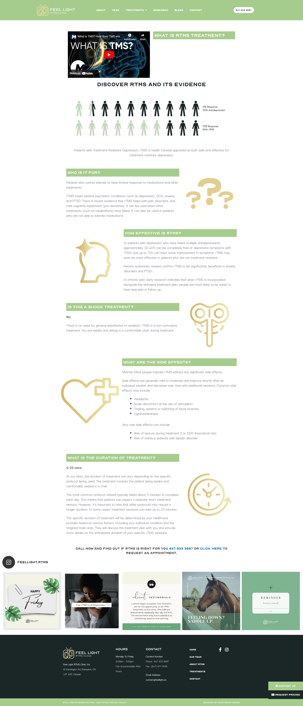
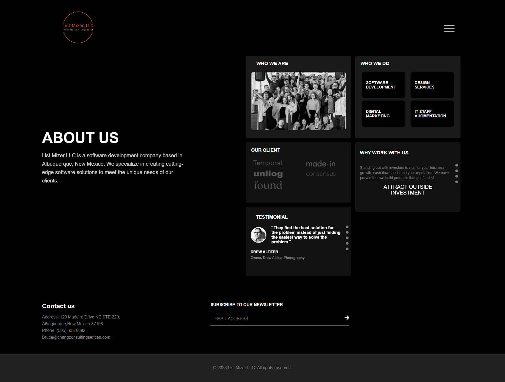
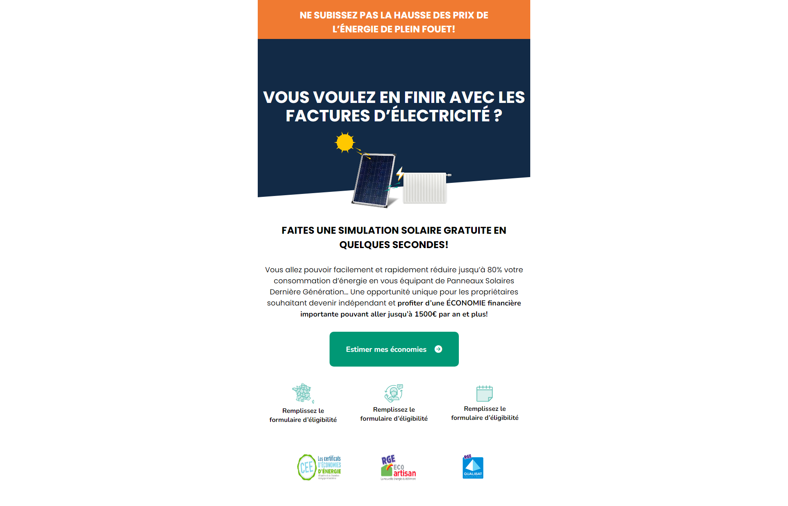

About
Passionate web developer with over 2+ year of experience, dedicated to crafting exceptional digital experiences. Proficient in front-end and back-end technologies, I specialize in creating responsive, user-friendly websites that seamlessly blend creativity with functionality. Committed to staying at the forefront of industry trends and continuously expanding my skill set, I strive to deliver innovative solutions that meet and exceed client expectations. Let's collaborate to bring your ideas to life in the digital world.

Web Developer/ UI/UX / Front end developer
Versatile Web Developer adept at creating seamless and user-friendly websites. Dedicated to merging design with functionality for impactful digital experiences.
- Birthday: 11 August 1995
- Phone: +919545532753
- City: Pune India 411046
- Degree: Master of computer science
- Email: poonamparakhe.7@gmail.com
- Freelance: Available
As a dedicated web developer, I combine technical expertise with a passion for creating exceptional digital solutions. With a focus on innovation and user experience, I am committed to delivering high-quality results. Let's connect and bring your ideas to life in the digital realm.
Skills
Discover my skills in a glance, each represented with a progress indicator showcasing my proficiency level. From front-end finesse to back-end mastery, I'm equipped to tackle diverse web development challenges. Let's collaborate and leverage these skills to bring your digital vision to life.
HTML 90%
CSS 85%
JavaScript 75%
Bootstrap 90%
WordPress/CMS 90%
Resume
In the resume section, discover my educational journey with a Master's in Computer Science and insights into my skills as a web developer. This comprehensive overview highlights my commitment to continuous learning and practical application of skills.
Sumary
Poonam B. Parakhe
I have 2+ year experience in designing and developing innovative and deadline driven websites.
- Gokulnagar , Katraj-kondhwa road
- 9545532753
- poonamparakhe.7@gmail.com
Education
Master of computer science
2018 - 2020
Sarhad College of Arts, Commerce and Science, Katraj, Pune
My MCS program equipped me with a diverse set of technical skills, including proficiency in programming languages, software tools, and methodologies relevant to the field of computer science. Moreover, I have cultivated essential soft skills such as problem-solving, communication, and teamwork, which are integral to success in any professional setting.
Bachelor of computer science
2015 - 2018
Sarhad College of Arts, Commerce and Science, Katraj, Pune
Bachelor's in Computer Science graduate, equipped with a strong foundation in software development, algorithms, and problem-solving. My academic journey laid the groundwork for a successful career in web development, fostering a passion for innovation and excellence.
Professional Experience
Web developer
2022 - Present
Walstar Technologies Pvt. Ltd.
- Collaborate within an Agile team structure where they will assist developing code using such
technologies as :
HTML5,CSS3,BOOTSTRAP,JAVASCRIPT,jQuery,UI Development,CMS - I have experience in handling USA/UK based clients and different CMS like WordPress,Wix,Webflow,Squarspace,Scaleup.
- I have demonstrated my expertise in crafting engaging web designs and delivering Innovative solutions to elevate customer engagement
- Designed templates using CMS with animation effects and responsive for devices and cross browser styling.
- Managed projects or different level of tasks at a given time while under pressure as per the client requirnment
Web developer Intern
2020 - 2021
ProError software solution Pvt Ltd
- 1 year and 4 months of experience as a software developer in proerror software solutions pvt ltd on design analysis, development and implementation of web application
- Hands on experience in UI technologies
Works
Explore a snapshot of my dynamic journey as a Junior Web Developer through select projects. From sleek front-end designs to robust back-end implementations, each project represents my commitment to crafting seamless user experiences. Scroll down to discover a curated collection of my work, showcasing diverse skills in web development.
Details
Crafted a sleek and user-friendly website for Total Solfi, seamlessly blending style with practicality. This project showcases my expertise in designing tailored online solutions, ensuring seamless navigation and accessibility for visitors exploring solar energy services. Through strategic design and engaging visuals, the Total Solfi website highlights my dedication to delivering immersive digital experiences for clients in the renewable energy industry.Specially I worked the most section 179 calculator and its functionalities.

Details
Created a modern and intuitive website for Building Kidz School, seamlessly blending aesthetics with functionality. This project showcases my skill in designing customized online solutions, prioritizing ease of use and accessibility for parents and guardians exploring educational services. Through strategic layout and engaging visuals, the Building Kidz School website reflects my commitment to delivering immersive digital experiences for clients in the education sector.
Details
Developed a sleek and user-friendly website for CPH Music, merging style with practicality. This project illustrates my ability to understand the client requirnment and there vision for the site and designed the same makeing the client more than statisfied about the work.In this site major work was done on the blog post from designing the section to making it look perfect.

Details
Developed the online platform for LV Physiotherapy, showcasing their commitment to providing evidence-based physiotherapy services tailored to individual needs and goals. The website is designed to convey the essence of personalized care, empowering users with information about LV Physiotherapy's dedication to rehabilitation and achieving a pain-free, active lifestyle.
Details
Developed a vibrant and intuitive website for Happy Hippo Branding, emphasizing creativity and functionality. This project showcases my ability to create innovative animations and layout according to the client requirnment.Designed the site from the scrtach,worked and managed the layout for responsive With engaging design elements and strategic content placement, the website reflects my commitment to delivering impactful online experiences for clients.

Details
Crafted a lightweight and user-friendly website for an RTMS clinic, seamlessly blending informative content with a clean design. This project showcases my ability to create tailored solutions, ensuring accessibility and ease of navigation for users seeking information about RTMS therapy. From intuitive layouts to informative sections, the RTMS website reflects my commitment to delivering functional and visually appealing digital experiences.
Details
Developed a sleek and intuitive website for Revu Software using the Wix platform, seamlessly merging functionality with aesthetic appeal. This project demonstrates my proficiency in leveraging Wix's tools to create tailored digital solutions, prioritizing ease of navigation and accessibility for visitors seeking software solutions. Through strategic design elements and engaging visuals, the Revu Software website reflects my commitment to delivering immersive online experiences for clients in the tech industry.

Details
Developed the Techno Bootstrap template, a showcase of my coding expertise, tailored for IT solution agencies. This responsive and modern template is designed to highlight advanced coding techniques and offers a sleek framework for presenting business solutions. Explore the Techno template to witness a fusion of creativity and functionality, demonstrating my proficiency in creating robust and visually appealing web solutions for IT-oriented businesses.

Details
Crafted an inviting and user-centric website for Raven Ridge Farm, seamlessly blending aesthetic appeal with practicality. This project demonstrates my expertise in designing personalized digital solutions, prioritizing accessibility and intuitive navigation for visitors exploring farm offerings. Through strategic layout and compelling imagery, the Raven Ridge Farm website embodies my dedication to delivering immersive online experiences that resonate with the audience

Details
Crafted an inviting and user-centric website for Raven Ridge Farm, seamlessly blending aesthetic appeal with practicality. This project demonstrates my expertise in designing personalized digital solutions, prioritizing accessibility and intuitive navigation for visitors exploring farm offerings. Through strategic layout and compelling imagery, the Raven Ridge Farm website embodies my dedication to delivering immersive online experiences that resonate with the audience.

Details
Developed a polished and user-friendly website template using HTML and CSS, seamlessly combining style with practicality. This project showcases my proficiency in crafting custom digital solutions, focusing on intuitive navigation and accessibility for users exploring various web elements. Through strategic design and visually appealing layouts, the HTML-CSS template reflects my dedication to delivering immersive online experiences that resonate with diverse audiences.

Details
Proficient in HTML and CSS, I specialize in designing captivating email templates that blend aesthetic appeal with seamless functionality. With a keen eye for detail and a deep understanding of responsive design principles, I craft email templates that not only look stunning but also adapt flawlessly to different devices and email clients.I am dedicated to delivering high-quality email templates that elevate engagement and drive results
Contact
I'm just a message away for collaborations or any inquiries. Let's chat and turn your digital ideas into reality!